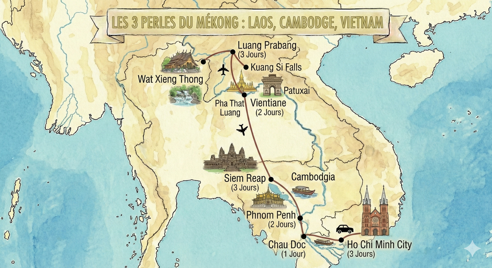

Indochine
21 Jours / 18 Nuits
{{ tour.title }}
{{ tour.route }}
Prix / Personne (Hors Vols)
dès
€
2 500
Dates & Prix
2026| Dates (Départ - Arrivée) | Prix / Personne | Statut | |
|---|---|---|---|
|
{{ date.start }}
au {{ date.end }}
|
{{ date.price }}
Hors Vols
|
Confirmé |
Départs garantis à partir de 2 personnes. Groupe limité à 15 personnes.
* Prix hors vols internationaux
Les atouts du programme !
"Un voyage d’exception à travers le Laos, le Cambodge et le Vietnam, alliant paysages spectaculaires, sites emblématiques et rencontres authentiques."
Vientiane et les chutes de Kuang Si, Luang Prabang classée à l’UNESCO, les temples d’Angkor, Hanoï et la baie d’Halong, Hoi An, Hué et le delta du Mékong pour une immersion complète au cœur de l’Asie du Sud-Est.
Carte de l'itinéraire

Itinéraire Détaillé
{{ day.day }}
{{ day.transport }}
{{ day.title }}
Hébergement : {{ day.hotel }}
Repas : {{ day.meals }}
Le prix comprend
- {{ item }}
Le prix ne comprend pas
- {{ item }}